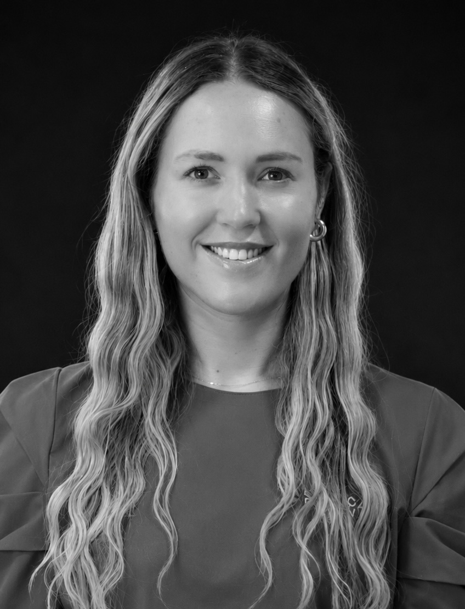
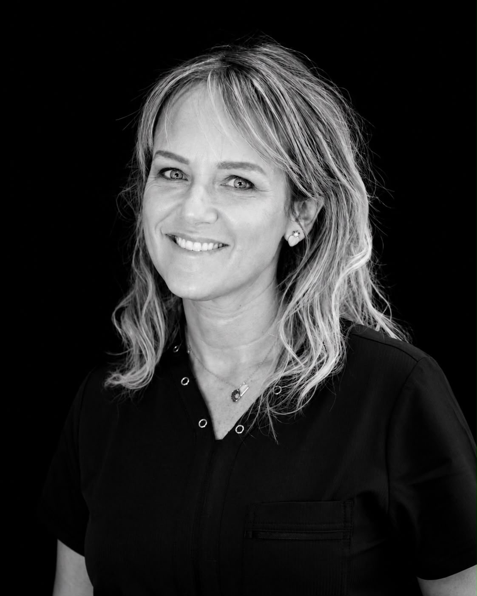
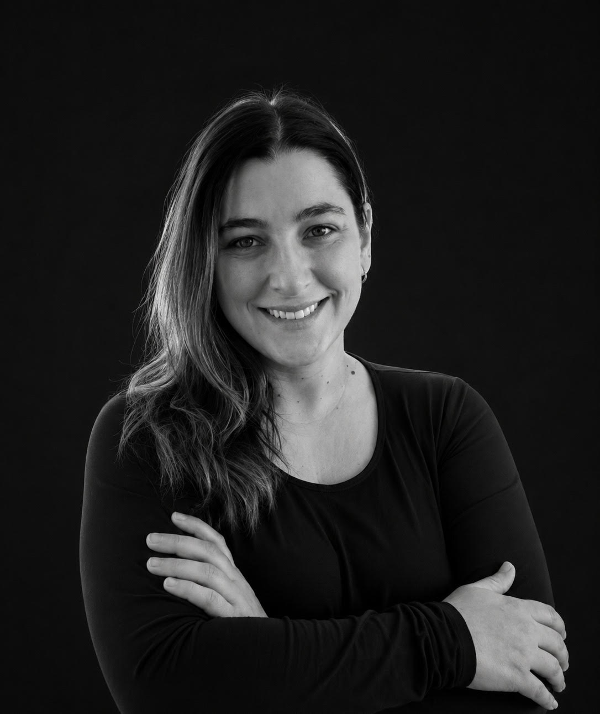
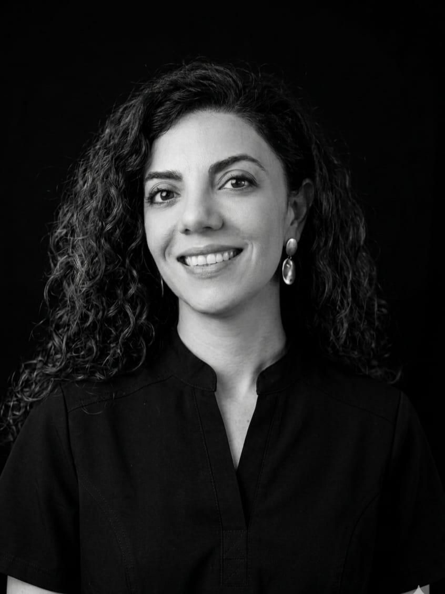
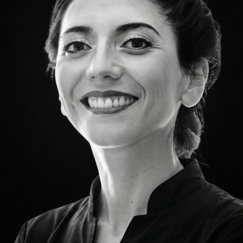

La fototerapia transformó nuestra manera de abordar muchos de los desafíos clínicos que enfrentamos a diario. Nos permitió incorporar herramientas terapéuticas seguras, versátiles y respaldadas por evidencia, generando un impacto real en la experiencia y los resultados de nuestros pacientes.
Con el tiempo, descubrimos que muchos profesionales querían incorporar estas tecnologías a su práctica, pero no siempre encontraban formación que combinara ciencia, criterio clínico y aplicación práctica. Así nació MEDadvance: creamos esta academia para compartir nuestra experiencia, acercar la evidencia científica a la práctica clínica y construir una comunidad donde profesionales de la salud puedan aprender, intercambiar experiencias y crecer junto a otros colegas con intereses afines.
Creemos que incorporar tecnología es mucho más que aprender a utilizar un dispositivo. Requiere comprender cuándo indicarla, cómo aplicarla y qué evidencia respalda cada decisión terapéutica. Por eso reunimos especialistas con experiencia clínica, trayectoria docente y formación avanzada en sus áreas de expertise, para que nuestros alumnos aprendan directamente de quienes lideran y desarrollan cada campo de conocimiento.
Nuestro objetivo es ayudarte a integrar la fototerapia con confianza, criterio clínico y fundamento científico, para que puedas transformar tu práctica profesional y generar un mayor valor para tus pacientes.
Dos especialistas que ejercen, investigan y enseñan fototerapia aplicada. Son la cara y el respaldo clínico de cada curso.


Membresía

Miembros de la Academy of Laser Dentistry (ALD), la principal organización internacional dedicada al uso clínico del láser.
Para algunos cursos sumamos especialistas de otras áreas. Estos son los primeros nombres confirmados, y la lista se irá ampliando a medida que cerremos nuevos cursos.





Revisa los cursos abiertos o escríbenos si tienes dudas del programa.
Ver cursos